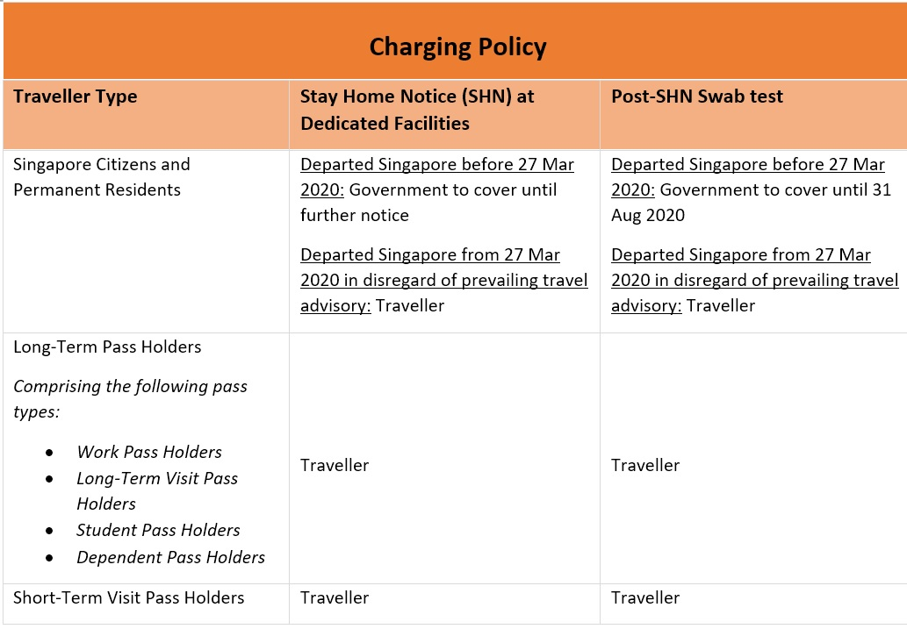

Phase 2: Safe Transitioning
Phase 2: Safe Transitioning
Businesses are putting in place safety measures and making adjustments as they get ready to welcome customers, and government service centres and libraries are among the public facilities set to reopen progressively.
 More
More
Bangladeshi worker Raju Sarker, also known as Case 42, is discharged from Hospital after spending almost five months there.
Tan Tock Seng Hospital says his journey to recovery leaves many of their care teams feeling overjoyed and can only describe this as 'remarkable' and 'dramatic'.
MoreAll patients aged 13 and above who show up at clinics with signs of acute respiratory infection will be tested for Covid-19.
This is part of measures to tackle the spread of the coronavirus, as cases are expected to rise with Singapore gradually reopening its economy.
MoreAmong the 31 contested electoral divisions, there were 17 GRCs and 14 SMCs.

Four SMRT bus drivers working at the Bukit Panjang integrated transport hub had contracted Covid-19 and tested positive.
They drove bus services 976, which plies to and from Choa Chu Kang Interchange; 184, a loop service that turns around at Clementi MRT Station; and 176, which plies to and from Bukit Merah Interchange.
MoreAccording to a new study in the prestigious medical journal The Lancet, researchers in Singapore discover new SARS-CoV-2 variant that causes less severe infections.
This could provide new avenues for vaccine and therapeutic development.
MoreMinister for Foreign Affairs Dr Vivian Balakrishnan spoke with Minister of Foreign Affairs of the Republic of Korea (ROK) Kang Kyung-wha via telephone.
They welcomed the conclusion of bilateral negotiations on a fast lane for essential business and official travel between Singapore and the ROK.
MoreThe business track facilitates essential business and official travel for residents from both countries.
This is the first such framework that Japan implements with another country, and helps restore connectivity and support economic recovery for Japan and Singapore.
MoreSafe living measures were "not strictly enforced" in the affected block, a total of 342 workers living at Space@Tuas dormitory have been moved to a government quarantine facility after a new COVID-19 case was recently detected.
MoreThe Ministry of Transport (MOT) announced plans to establish an air travel bubble between Singapore and Hong Kong, which would allow people to travel between the cities without a quarantine, subject to conditions.
Transport Minister Ong Ye Kung added that this was an initiative which would be done progressively, cautiously, steadily and safely.
MoreAll Singaporeans aged 18 and above this year will receive $100 vouchers, which can be used for staycations, local tours and at attractions from December to June
Adult Singaporeans will also be able to purchase up to six subsidised tickets for attractions and tours - each at $10 off - for those under 18.
MoreResearchers at the National University of Singapore (NUS) have developed a breath test to detect COVID-19 within a minute.
The test, which detects volatile organic compounds (VOC) in a person’s breath, achieved more than 90 per cent accuracy in a clinical trial involving 180 patients.
MoreThis transition from other SafeEntry methods will prepare Singapore to resume larger-scale events and further reopen the economy safely amid the Covid-19 pandemic.
It will also be the way forward going into Phase 3.
MoreTThe Ministry of Health announced that from 1 January 2021, the government will not pay for the costs for Singaporeans and permanent residents who last left Singapore before 27 March 2020 to stay at dedicated stay-home notice facilities.
 More